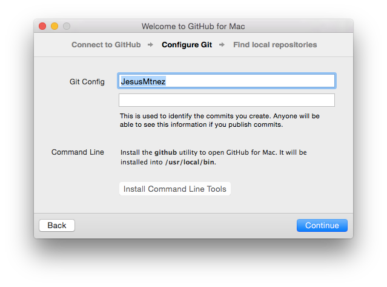

Como ya hemos dicho, Git es un sistema de control de versiones con el que podremos gestionar y controlar nuestro código fuente. Estos sistemas de control de versiones nos permiten resolver ciertos problemas que los desarrolladores de código encontramos a la hora de programar:
Además de la herramienta Git, veremos dos servidores de repositorio Git muy conocidos en los que podrás aprender a alojar tu código, como GitHub y GitLab.
Pendiente de determinar.
Para asistir al curso recomendamos asistir con:
Existen diversas formas de instalar Git in MacOSX. Para facilitarnos a todos las cosas, instalaremos Git con la ayuda del instalador de GitHub, que nos instalará Git para nuestra consola y también con interfaz gráfica.
git desde nuestra terminal. Pulsamos continuar y después finalizar.

git --versionOtra opción de instalación es a través de la página oficial de git, que ofrece un instalador de git: Descargar.
También puedes instalar git a través de gestor de paquetes brew. Simplemente ejecuta: brew install git
La instalación en linux la realizaremos a través de un terminal.
sudo apt-get install gitpacman -S gityum install gitPuedes consultar más información aquí.
Existen diversas maneras de instalar git en nuestro equipo Windows. Para este sistema operativo utilizaremos el instalador que nos ofrece la página oficial de git, que nos instalará una consola estilo UNIX donde podremos usar git como un un equipo linux: Descargar.